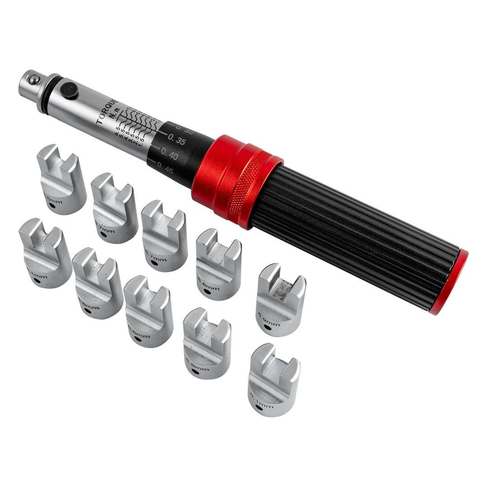
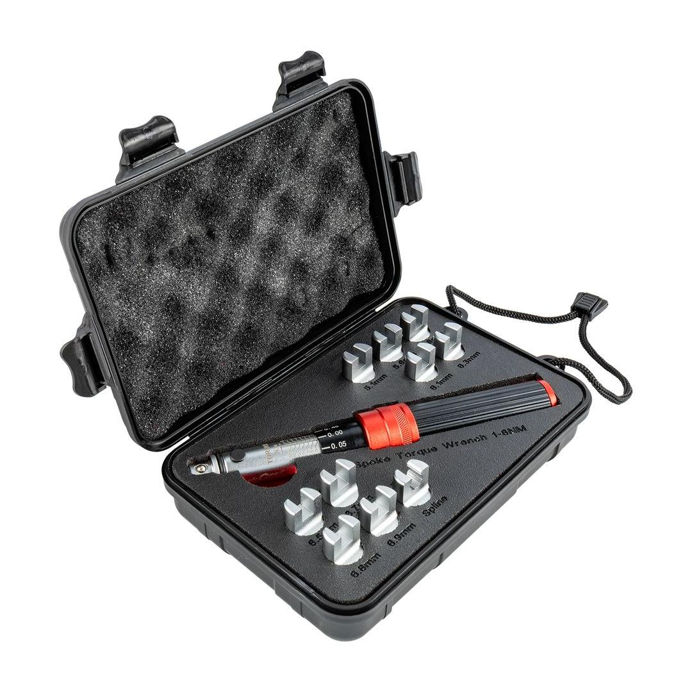
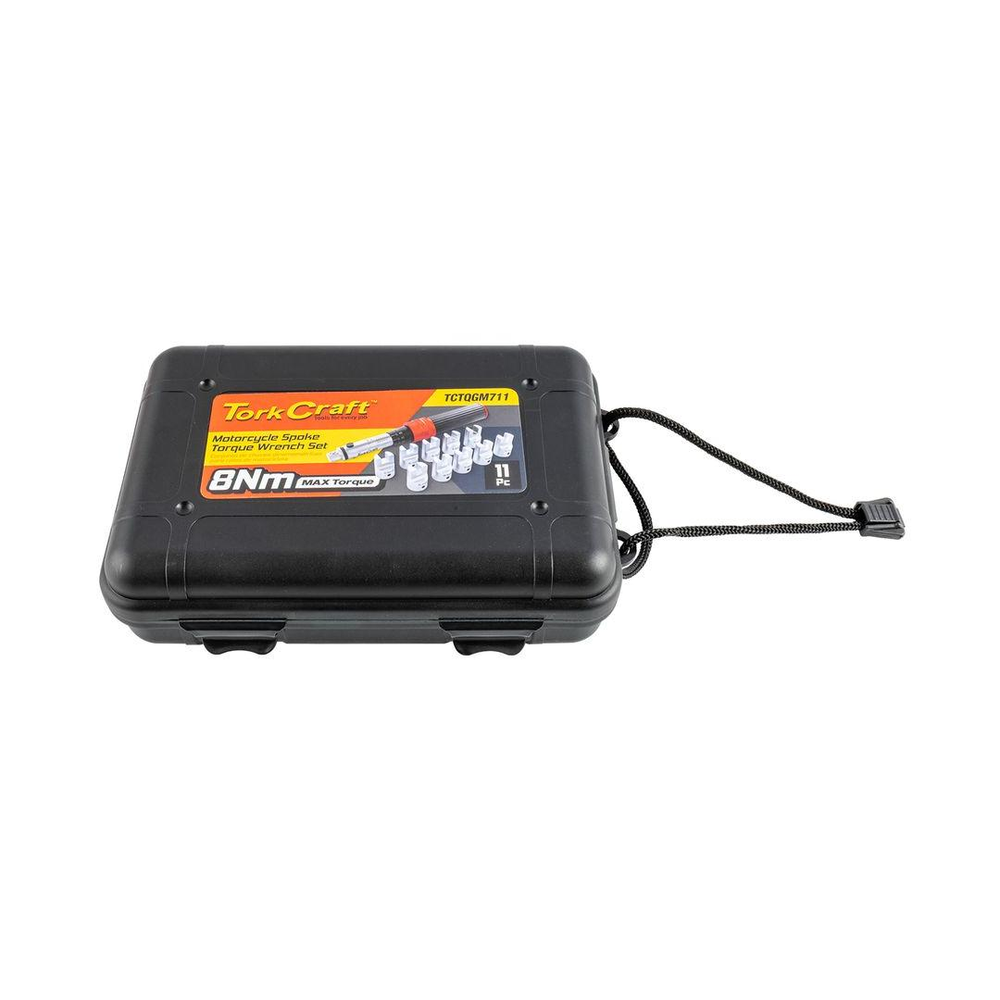

TCTQGM711
2396.60



Torque Wrench: 160mm
Torque Range: 1 - 8Nm
Classification: Standard (Yellow)
This specialized 11-piece Spoke Torque Wrench Set is the essential toolkit for any mechanic or enthusiast dedicated to precision wheel building and maintenance on bicycles or motorcycles. The core purpose of this set is to ensure that every spoke is tensioned to its exact manufacturer-specified torque value, a critical step for maintaining wheel integrity, lateral and radial stability, and overall longevity.
The centerpiece of the kit is the high-quality 160mm torque wrench. Its compact and lightweight design offers superior maneuverability, allowing for precise control and easy access to spokes, even in the tight confines between the hub and rim. This dedicated tool removes the guesswork from spoke tensioning, guaranteeing uniformity across the wheel and preventing the common issues of premature wheel failure or spoke breakage caused by uneven or incorrect tension.
Completing the set are the 10 interchangeable spoke wrench heads (or precision bits). These heads are meticulously machined to fit a wide array of common spoke nipple sizes, ensuring a perfect, non-slipping engagement. This precise fit is vital for preventing the rounding or damaging of expensive spoke nipples during the tensioning and truing processes. The entire system is typically housed in a rugged, organized storage case, making it portable and ensuring that all 11 pieces are protected and ready for immediate use, whether in a professional shop environment or a home garage.
Application: